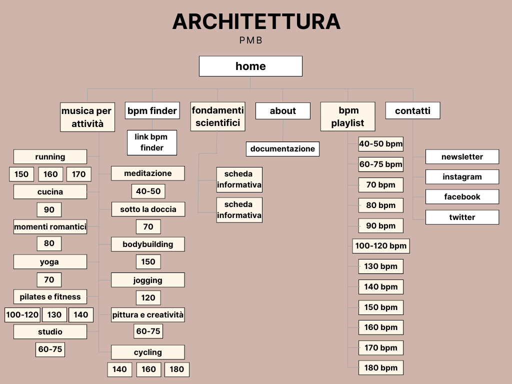
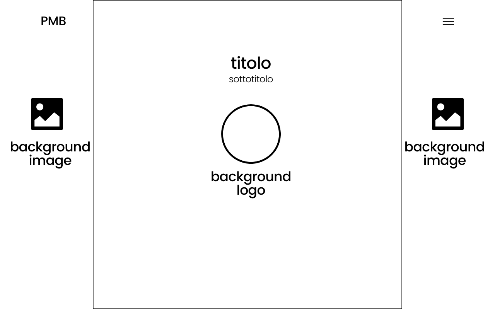
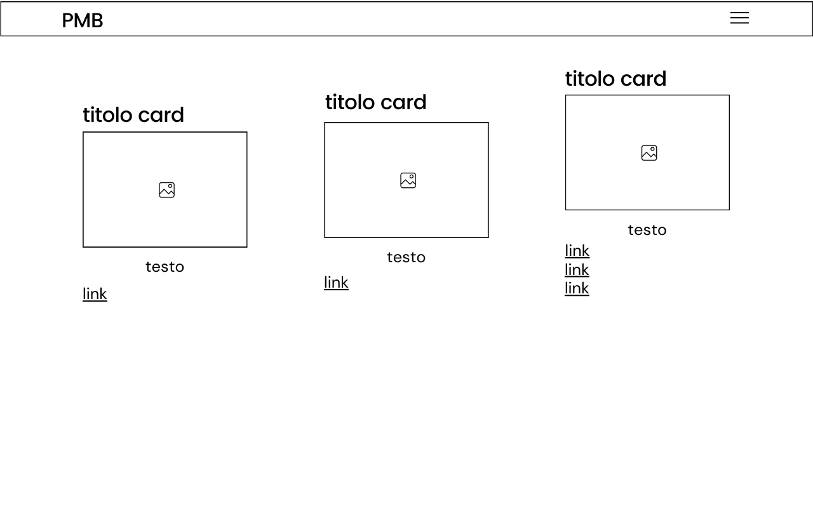
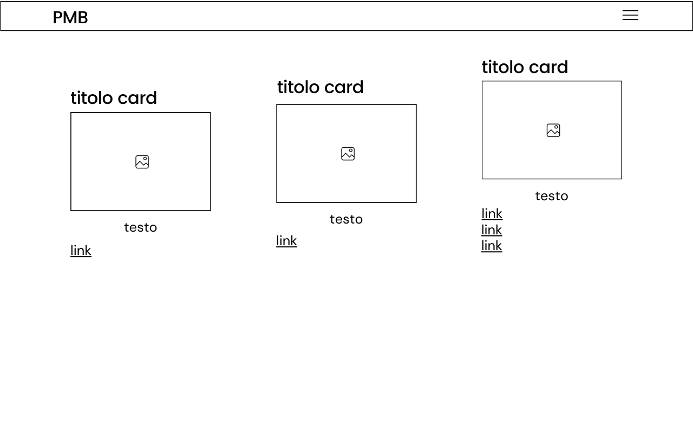
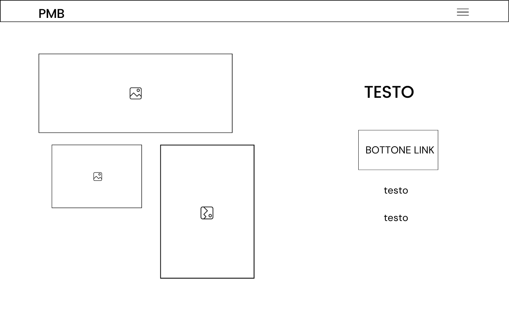
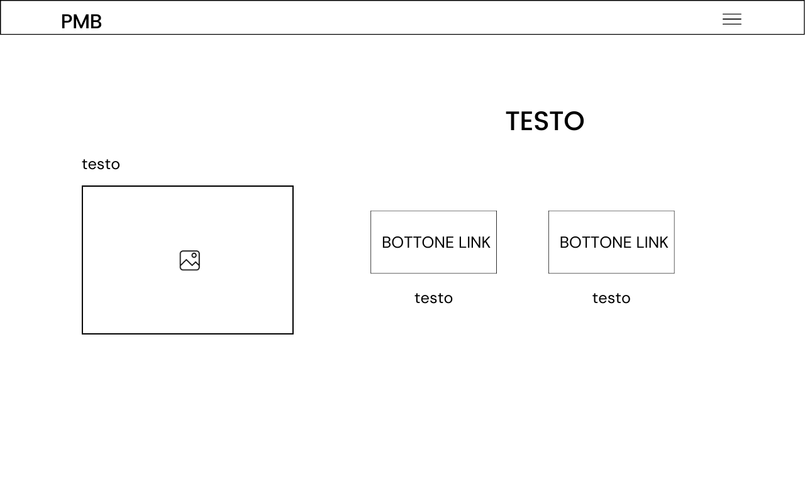
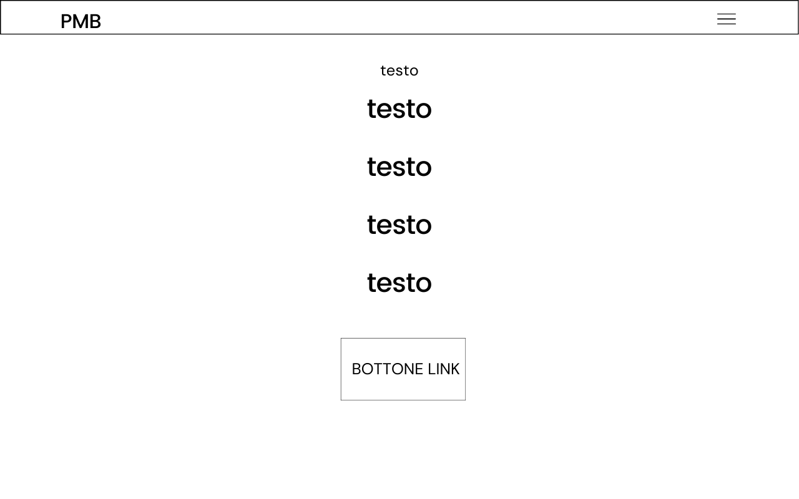
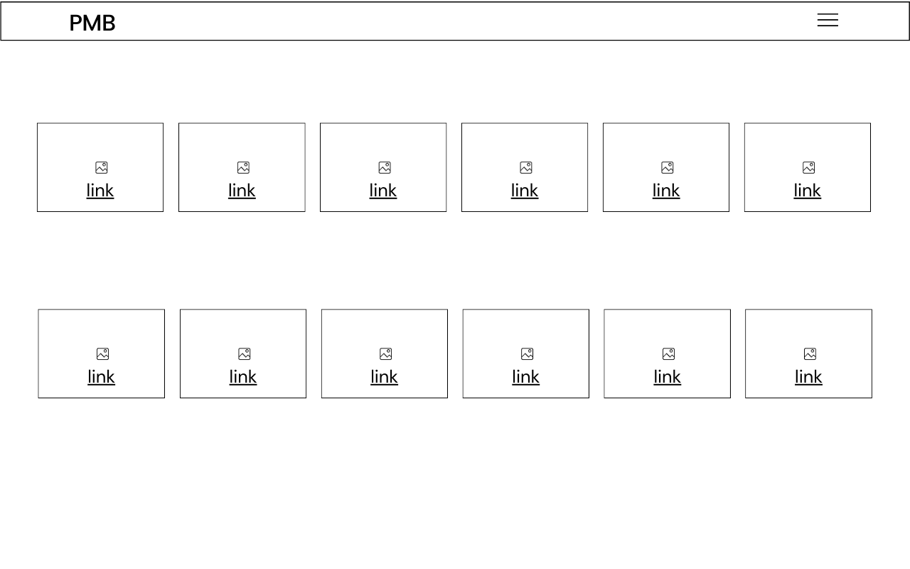
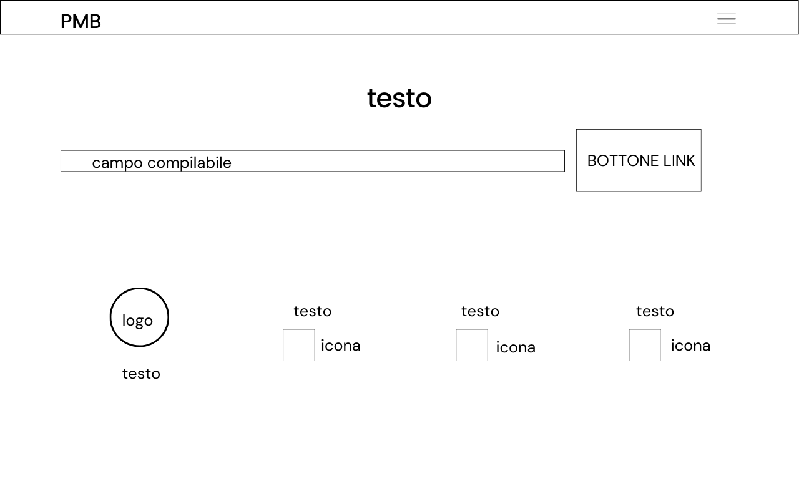

Abstract
I bpm (battiti per minuto) sono l'unità di misura della frequenza cardiaca, ma anche del tempo musicale.
È stato dimostrato che il ritmo cardiaco tende ad uniformarsi ai bpm della canzone che stiamo ascoltando.
Musica e corpo trovano una propria armonia.
Lascia che la musica ti aiuti a raggiungere le condizioni fisiche e cardiache ideali per svolgere diverse attività.
Benchmarking
Obiettivi
È stato dimostrato che i bpm del cuore tendono ad uniformarsi ai bpm della canzone che si sta ascoltando.
PMB offre playlist differenziate in base all'attività svolta dall'utente. Le canzoni presentano tanti bpm quanti sono i battiti che il cuore umano compie mediamente nello svolgere quella determinata attività.
Il sito offre, inoltre, la possibilità di calcolare il numero di bpm delle canzoni.
PMB mette poi a disposizione dell'utente una libreria di playlist differenziate in base al numero dei bpm.
Target
Il sito si rivolge a coloro che vogliono ascoltare musica mentre svolgono altre attività o che desiderano scegliere le canzoni da ascoltare filtrandole per numero di bpm.
Benchmarking
SPOTIFY non offre la possibilità di filtrare le canzoni in base al numero di battiti per minuto. Solo digitando nella barra di ricerca "bpm" si trovano playlist, per lo più create da utenti, in cui vengono raccolte canzoni differenziate per bpm.
Spotify inserisce nei suggerimenti di ricerca soltanto qualche attività (cucina, bambini…) senza avere una sezione specifica in cui propone le canzoni più adatte per le diverse attività.
Infine, non presentando un filtro per bpm e non avendone neppure uno per le diverse attività, Spotify non offre la possibilità di scegliere canzoni che abbiano un numero di bpm adeguato all'attività che si sta svolgendo.
TUNEBAT è un database di canzoni che vengono catalogate anche in base ai bpm.
Tunebat offre poi all'utente diverse possibilità: calcolare il numero di bpm di una canzone, usare il metronomo, sperimentare strumenti di mastering musicale…
Rispetto a PMB, Tunebat cataloga le canzoni anche in base ai bpm, ma non suggerisce di ascoltare quella canzone mentre si sta svolgendo una determinata attività, in modo che battiti del cuore e tempo musicale siano in armonia.
Struttura e Layout
Architettura del sito
Wireframe
HOME
Musica per attività

 

BPM finder
Fondamenti scientifici
About
BPM playlist
Contatti
Look and Feel
Font: Fraunces 400, 700, italic 700. Ho scelto di utilizzare un unico font, di tipo serif, alternando stili e pesi per differenziare testo e titoli di diverso livello. Tale scelta è dovuta al fatto che le grazie dello stile serif legano una lettera all'altra e rendono più agevole e scorrevole la lettura. Credo che, abbinando un font serif ad uno sito web scrollabile, si porti l'utente a soffermarsi più a lungo sul sito stesso.
Palette di colori: #cfb4ac(sfondo e link); #fff(per sfondo e testo); #6c757d(per colore del testo nel footer); #212529(per colore del testo); #fd7e14(bordo del bottone documentazione); #151515(testo e bordo dei bottoni); #484e53(per bottone bpm finder e bottoni per informazioni). Ho scelto di utilizzare una palette dai colori neutri (bianco, nero e qualche sfumatura di grigio) inserendo un colore rosa pastello come cifra distintiva del sito.
Ho alternato pagine con sfondo bianco e testo nero o grigio scuro a pagine con sfondo rosa pastello e testo bianco o grigio chiaro. Ho cercato, in questo modo, di marcare il passaggio ad una nuova pagina del sito, pur mantenendo il meccanismo dello scroll.
Ho scelto di rendere più accattivanti le diverse pagine e sezioni del sito inserendo immagini dai colori pastello. I bottoni presentano tratti semplici e puliti.
Linguaggi e Strumenti
Linguaggi
HTML, CSS, JAVASCRIPT
Strumenti
○ bootstrap per la struttura del template
○ Google Fonts per la scelta del font
○ Visual Studio code, editor di codice sorgente, per la realizzazione del sito
○ Adobe color per la scelta dei colori
○ Canva per disegnare il logo del sito
○ Canva per la rappresentazione della struttura ad albero e del wireframe del sito
○ Font Awesome per l'inserimento di icone nel sito
○ Pexels, database di immagini esenti da royalty
Communication Strategy
Background
Spotify e Tunebat sono siti che misurano milioni di visualizzazioni ogni giorno. Si tratta di siti la cui comunicazione è efficace e immediata.
PMB, oltre all'idea innovativa di proporre playlist differenziate per numero di bpm e per l'attività svolta, dedica ad ogni sezione un breve testo di approfondimento.
Obiettivi Comunicativi
Il sito ha l'obiettivo di consigliare a ciascuno la musica più adatta all'attività che sta svolgendo, spiegando come i bpm del tempo musicale influenzino la frequenza cardiaca e mostrando come, di conseguenza, abbiano un'effetto anche sull'umore e sull'energia spesa nel compiere determinate attività.
Target audience e messaggio
Il sito si rivolge potenzialmente a persone appartenenti a tutte le fasce d'età. È, però, probabile che i più anziani fatichino a raggiungere il sito, poiché esso viene pubblicizzato specialmente su instagram e whatsapp. La difficoltà del progetto è spiegare con semplicità e chiarezza il significato del termine "bpm", che non tutti conoscono
Promozione
Il sito è promosso online, attraverso post e storie su instagram e attraverso la condivisione del link d'invito al sito su chat di whatsapp e instagram.
Valutazione dei risultati
L'obiettivo è di raggiungere 50 visite al sito web da utenti unici